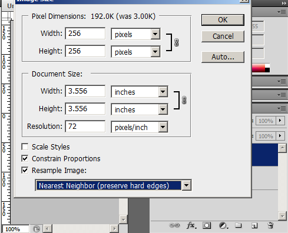
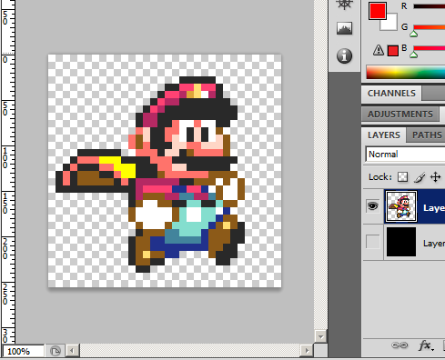
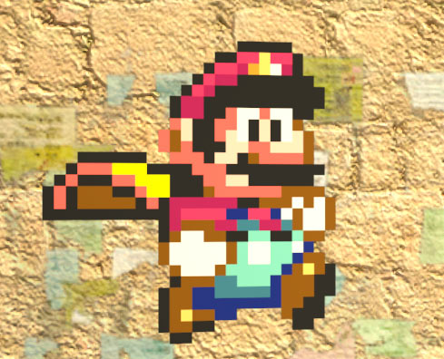
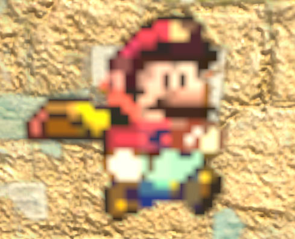
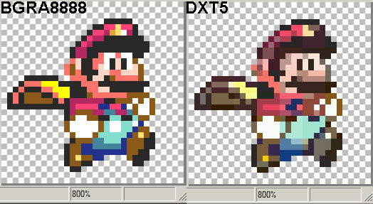
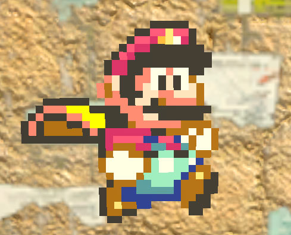
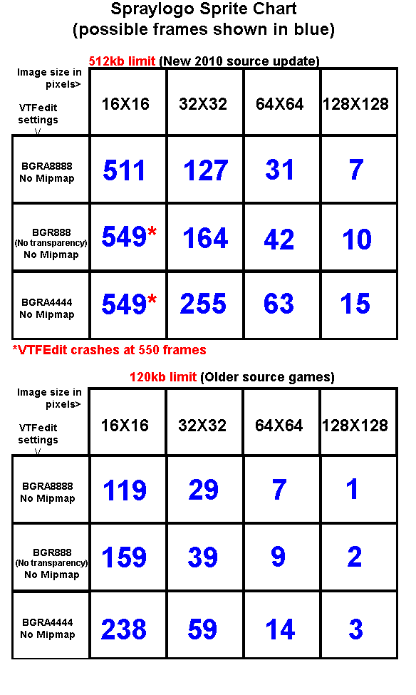
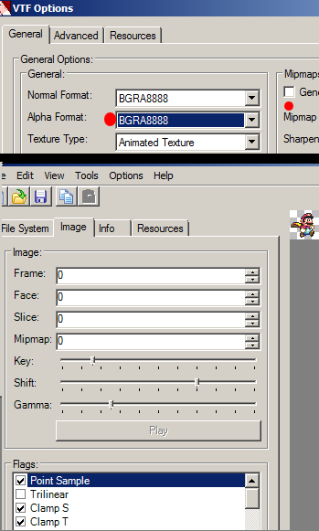

Ever wanted to make spraylogos of old sprites while still looking pixelated? There are 2 ways you can achieve this. One involves just resizing a sprite to your typical spraylogo size, and the second way is using very low resolutions with uncompressed formats and "point sampling". The second method allows for more frames while maintaining a pixelated look.
We started with an image on a 32X32 pixel canvas.
Scaled it up to 256X256 using "Nearest Neighbor"
Our resized result. It is then processed & saved like any other spray we have done previously using the same methods.
What the spray looks like in game.
Now for the second method we would save it at its original size of 32X32 pixels since that is a valid power of 2 size, but there arises a problem:
What is happening here is that its being filtered, and DXT5 compression is also making things worse. So what do we do? We use an uncompressed format and we use the "Point Sample" VTF flag.
Here is an example of 2 VTF files made from the same tga and magnified to 800%. See how DXT5 compression can mess up small sized images? On the left I used an uncompressed format.
As you can see here this is a 32X32 pixel spray made with BGRA8888 format and the "point sample" flag. Because point sampling is a very low quality filtering method, it defeats the purpose of using mipmaps and the need for "edge bleed" as discussed in tutorial 2.
I have created a chart on the amount of frames you can get using this method. BGRA8888 is uncompressed with alpha, BGR888 is the same without alpha, and BGRA4444 is a format with a lower colour depth (this makes for a lower filesize so it can allow even more animation frames, but this format can look slightly translucent when sprayed).
Making a VTF with these formats and the "point sample" flag is demonstrated here:
Importing animation frames into VTFEdit is the same as I discussed in Spraylogo Tutorial 3
This concludes my spraylogo tutorial.
{kind=link}